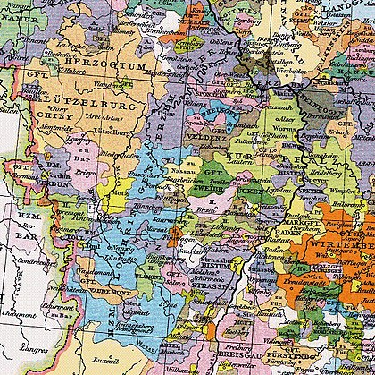

History
Имя Люксембург происходит от одного старинного укрепления, которое первоначально называли Лутцебург. С 963 года известно название Люцлинбургус, а с 1125 года Lucelenburgensis en opidum et castrum Luxelenburgensis. Название Люксембург состоит из двух слов немецкого происхождения: лутила (маленький) и бург (замок). В позднее Средневековье под влиянием французского языка государство стали называть Люксембург.
